Introducción a Microsoft Power BI (Actualizado 2026)
Este curso está destinado a enseñar los fundamentos de Microsoft Power BI a personas con poca o ninguna experiencia previa. Con él harás una introducción en la plataforma Power BI utilizando una variedad de conjuntos de datos y utilizando el enfoque "aprender haciendo".
Power BI te dará la oportunidad de presentar los resultados de tu trabajo en informes interactivos llamados dashboards (cuadros de mando), de una forma dinámica, interactiva y actualizable. Después de diseñar un informe no tendrás por qué tocarlo más, a menos que quieras realizar cambios en el mismo, ahorrando el tiempo que necesitas para realizar otras tareas.
El curso se realizará mediante ejercicios guiados. Al acabar el curso, estarás en capacidad de visualizar, analizar y relacionar datos y presentarlos en dashboards utilizando la herramienta Power BI Desktop.
En resumen:
- Conocerás el entorno de diseño y visualización de datos de Power BI.
- Aprenderás a importar y relacionar datos de diferentes fuentes (Excel, archivos de texto, bases de datos, etc.).
- Aprenderás a hacer fórmulas básicas en DAX (el lenguaje de fórmulas de Power BI) de forma manual y asistida por Inteligencia Artificial.
- Diseñarás dashboards interactivos utilizando las mejores prácticas visuales.
- Utilizaremos Power BI Desktop como la herramienta principal para la exploración de datos y la creación de informes.
Tema 1: Elementos Introductorios y Modelado
En este tema conocerás más sobre los elementos que integran Power BI y de qué trata la Inteligencia de Negocios (Business Intelligence). Además, aprenderás a instalar Power BI Desktop y verás una introducción a lo que es el modelado de datos.
1.1 Componentes de Power BI
¿Qué es Power BI?
Power BI es un ecosistema de análisis e inteligencia empresarial basado en la nube de Microsoft. Hoy en día, se integra de forma nativa como una pieza fundamental de Microsoft Fabric (la plataforma unificada de datos e IA de Microsoft).
Power BI consta de varios componentes que funcionan juntos, empezando por estos tres bloques básicos:

- Power BI Desktop: Una aplicación de escritorio gratuita para Windows destinada a la creación de modelos e informes.
- Servicio Power BI: Un portal en línea (Software As A Service) basado en la nube para publicar y compartir los informes.
- Power BI Mobile: Aplicaciones para dispositivos móviles (iOS y Android) para visualizar los informes en cualquier lugar.
La herramienta central de desarrollo es Power BI Desktop.
Desde ella, diseñarás los informes de forma local y los guardarás como archivos con extensión .pbix.
Nota para usuarios de Mac: Power BI Desktop es una aplicación exclusiva para el sistema operativo Windows. Si utilizas un ordenador Mac, para seguir este curso necesitarás utilizar un entorno virtualizado (como Parallels o Boot Camp) o una máquina virtual en la nube.
Dentro de Power BI Desktop se encuentra el Editor de Power Query, la herramienta encargada de conectar tus fuentes de datos y realizar todos los pasos de limpieza y preparación necesarios. Una vez listos, los datos se cargan en el motor analítico en memoria de Power BI (motor VertiPaq), que comprime la información para trabajar de forma ultra rápida con millones de filas.
Una vez que los informes están listos, se publican en el Servicio Power BI (accesible desde el portal web de la organización), donde podrás compartirlos de manera segura con tus compañeros de trabajo o clientes.
Una vez que hayas configurado una cuenta con el servicio Power BI, puedes subir tus archivos PBIX terminados o publicarlos directamente desde Power BI Desktop. Desde aquí, puedes compartir fácilmente los informes con tus compañeros que también tengan acceso al servicio.
⚠️ Advertencia de Seguridad muy importante: Power BI cuenta con una función llamada "Publicar en la web" que permite incrustar informes de forma pública en blogs o páginas web. Sin embargo, debes tener extremo cuidado: esta opción hace que tus datos sean 100% públicos en internet sin ninguna contraseña. Debido a este riesgo de filtración de datos, la mayoría de las empresas desactivan esta función por defecto para proteger su información confidencial.
1.2 Inteligencia Empresarial de Autoservicio (Self-Service BI)
La Inteligencia Empresarial (BI) hace referencia a los métodos para recoger, transformar y visualizar datos en bruto para ayudar a las empresas a tomar mejores decisiones.
El desarrollo tradicional de BI requería de ingenieros de software y complejos almacenes de datos (Data Warehouses). Power BI revoluciona esto ofreciendo BI de autoservicio: elimina las barreras técnicas para que cualquier usuario de negocio, sin saber programar, pueda conectar sus fuentes de datos, transformarlas y diseñar gráficos informativos e interactivos, lo cual se conoce como Visualización de datos.
1.3 Instalar Power BI Desktop
Para completar este curso, debes instalar la herramienta en tu ordenador.
En 2026, Microsoft da soporte exclusivo para Power BI Desktop en sistemas operativos modernos: Windows 10 y Windows 11. Las versiones antiguas de Windows (como Windows 7 u 8) ya no son compatibles.
1.3 Instalar Power BI Desktop
Para completar este curso, debes instalar la herramienta en tu ordenador.
En 2026, Microsoft da soporte exclusivo para Power BI Desktop en sistemas operativos modernos: Windows 10 y Windows 11. Las versiones antiguas de Windows (como Windows 7 u 8) ya no son compatibles y no requieren que verifiques si tu sistema es de 32 o 64 bits, ya que el proceso actual lo detecta automáticamente.
Pasos para la instalación a través de la Microsoft Store:
- Haz clic en el botón de Inicio de Windows (🪟), en la Barra de tareas.
- Escribe directamente en tu teclado Microsoft Store y presiona la tecla
ENTER(o busca el icono de una bolsa de la compra blanca con el logotipo de Microsoft). - Una vez abierta la tienda, dirígete a la barra de búsqueda (🔍) en la parte superior, escribe Power BI Desktop y presiona Buscar.
- Selecciona la aplicación oficial de Microsoft (asegúrate de que el editor sea Microsoft Corporation) y haz clic en el botón azul que dice
InstalaruObtener.
¿Por qué Microsoft decidió hacerlo de esta manera? Instalar Power BI desde la tienda oficial de Windows garantiza que el programa se actualice de forma automática y silenciosa todos los meses en segundo plano. Así siempre tendrás las últimas herramientas e interfaz del 2026 sin tener que reinstalar el programa manualmente cada mes.
Al abrir Power BI Desktop por primera vez tras la instalación, verás una pantalla de bienvenida que te invita a iniciar sesión. No es obligatorio hacerlo para diseñar tus primeros informes; puedes cerrar esa ventana haciendo clic en la X de la esquina superior derecha e ir directo al lienzo de trabajo.
(Instalar Power BI desde la tienda garantiza que se actualice automáticamente todos los meses sin perder tus configuraciones).
Después de instalar Power BI Desktop, podrás ver el siguiente icono en el menú de Inicio.
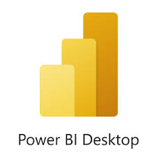
1.4 Modelización de datos
El modelo de datos es la estructura interna de tablas y relaciones que soporta tu informe; es la parte que tu público no ve, pero es la más importante. Un modelo puede tener una o muchas tablas conectadas entre sí mediante datos que comparten (por ejemplo, conectar una tabla de "Clientes" con una tabla de "Ventas" a través de un código de identificación único llamado ID). Estas conexiones se denominan relaciones.
El proceso básico de modelado sigue tres pasos (ETL):
- Importar (Extract): Conectarse a las fuentes de datos.
- Transformar (Transform): Limpiar y estructurar los datos en el Editor de Power Query.
- Cargar (Load): Llevar los datos limpios al lienzo de Power BI para empezar a diseñar.
Tema 2: Creando el primer Dashboard con datos de Excel
Objetivos y Técnicas
- Importar datos desde un archivo Excel (countries.xlsx).
- Seleccionar y limpiar columnas en Power Query.
- Diseñar un dashboard interactivo utilizando la nueva interfaz visual.
2.1 Cargar los datos y transformarlos
Caso práctico: A partir de una lista de países, crearemos un dashboard interactivo para ver la población por región, el área por continente y el estatus de los países.
-
Abre Power BI Desktop. En la cinta de opciones superior (Inicio), haz clic en el botón Libro de Excel.
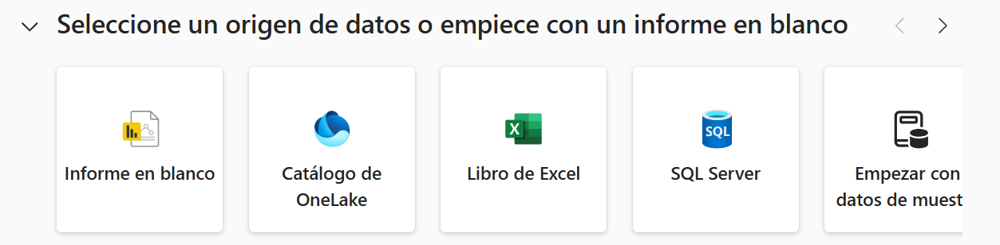
Seleccionar Origen de Datos - Selecciona tu archivo countries.xlsx. En la ventana del "Navegador", marque la casilla de la tabla Countries y haz clic en el botón Transformar datos (esto abrirá el Editor de Power Query).
Limpieza de columnas: En Power Query, haz clic derecho sobre las cabeceras de las columnas que no necesites y selecciona
Quitar. Conserva únicamente: Nombre Oficial, Continente, Región, Estatus, Kilómetros Cuadrados y Población.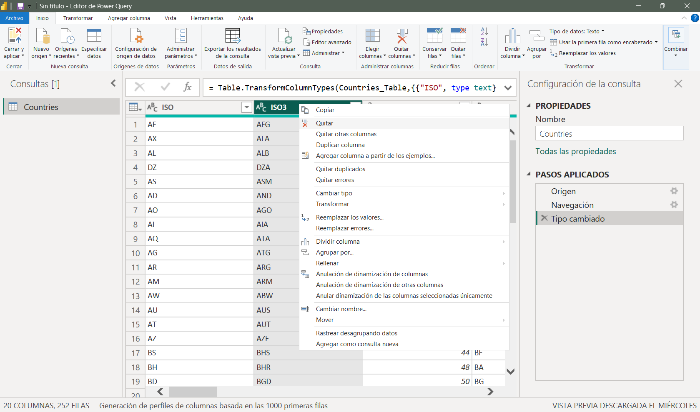
pantalla powerquery - Renombrar: Haz doble clic sobre la cabecera de la columna Kilómetros Cuadrados y cambia su nombre a Área.
- Cargar: En la esquina superior izquierda de Power Query, haz clic en
Cerrar y aplicar. Volverás a la pantalla principal de Power BI Desktop. - Guarda tu archivo seleccionando
Archivo > Guardarcon el nombre paises.pbix.
Nota: Power Query registra cada acción que realizas en el panel derecho llamado
Pasos aplicados.
Si te equivocas, puedes borrar el paso haciendo clic en laXa su lado. Cada vez que actualices el informe en el futuro, Power BI repetirá estos pasos automáticamente.
2.2 Generar el dashboard con los gráficos
Al regresar al lienzo de Power BI, utilizaremos la interfaz de interacción en el objeto para crear los elementos visuales.
- En el extremo derecho de la pantalla, despliega el panel Datos. Verás tu tabla Countries. Clica sobre la flecha desplegable a la izquierda del nombre de tu tabla.
Haz clic sobre el campo
Poblacióny arrástralo directamente al centro del lienzo blanco. Power BI detectará automáticamente que es un campo numérico y creará un gráfico de barras predeterminado con el total mundial.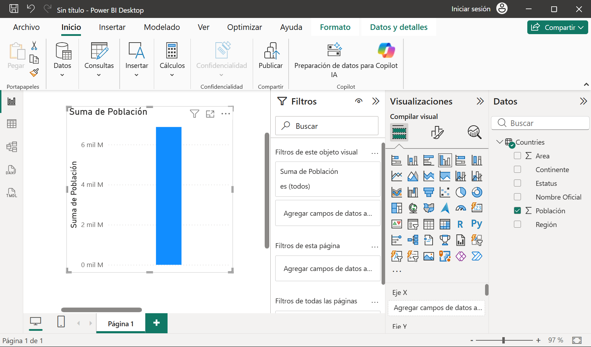
Gráfico 1. Suma de Población por Región Al hacer clic en tu gráfico, fíjate en el extremo derecho de tu pantalla. Verás en el panel de
Visualizaciones, tres pequeños iconos verticales: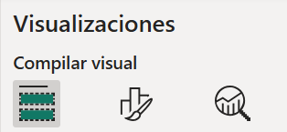
Iconos del panel de visualizaciones - El primer icono de la izquierda se denomina
Compilar visualy permite seleccionar el tipo de gráfico e indicar los campos que irán en el Eje X, Eje Y, Leyenda, etc. - El segundo icono
Formato visual, se usa para cambiar el formato de cada parte del gráfico (o visual, como lo denomina PowerBI) - El tercer icono (
Analytics) permite agregar líneas de tendencia o medidas estadísticas al gráfico
- El primer icono de la izquierda se denomina
Para desglosar tu gráfico por región, asegúrate de tener seleccionado el icono
Compilar visualy arrastra el campo Región directamente al recuadro delEje Xen el Panel de visualizaciones.Podrás cambiar los títulos y colores del mismo, seleccionando el icono
Formato visualy explorando las diferentes opciones que ofrece.Cambia el título del Gráfico a Población Mundial por Región.
-
Completa tu dashboard deseleccionando el gráfico actual (haciendo clic en el fondo blanco) e insertando los siguientes visuales desde la sección de visualizaciones en la cinta superior:
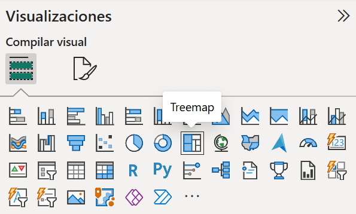
Visuales de Power BI - Gráfico 2. (Área por continente):
Selecciona el visualTreemap. Añade Área en el campo deValoresy Continente en laCategoría. - Gráfico 3. (Países por Estatus):
SeleccionaGráfico de barras apiladas. Añade País aEje X(para que los cuente) y Estatus alEje Y. - Gráfico 4 (Países por Continente):
SeleccionaGráfico circular. Añade País aValoresy Continente a laLeyenda.
- Gráfico 2. (Área por continente):
- Finalmente, haz doble clic en la pestaña inferior que dice
Página 1y renómbrala como El Mundo. Guarda tus cambios y cierra el archivo.
Tema 3: Fórmulas y Vistas en Power BI
3.1 Conociendo el entorno de trabajo: Las 5 Vistas de Power BI
En el extremo izquierdo de tu pantalla descubrirás una barra lateral gris con cinco iconos verticales. Estas son las ventanas que te permitirán saltar entre el diseño visual, tus bases de datos y la programación profunda:
- Vista de Informe: Es tu lienzo creativo. Aquí es donde diseñas la interfaz, colocas los gráficos y das forma al cuadro de mando interactivo.
- Vista de Tabla: Tu hoja de datos. Es fundamental para el desarrollo de fórmulas, ya que aquí inspeccionaremos las filas y veremos el resultado inmediato de nuestras Columnas Calculadas.
- Vista de Modelo: El mapa relacional. Aquí gestionamos las conexiones invisibles (relaciones) entre las diferentes tablas del modelo de datos.
- Vista de Consulta DAX: Un laboratorio de código integrado para usuarios avanzados que permite escribir, evaluar y auditar fórmulas DAX complejas de forma rápida.
- Vista TMDL: Una herramienta profesional pensada para desarrolladores senior que traduce toda la estructura técnica de tu informe a archivos de texto plano para facilitar el trabajo en equipo y el control de versiones.
Consejo para el curso: Durante este bloque formativo pasaremos la mayor parte del tiempo saltando entre la Vista de Informe y la Vista de Tabla. No te preocupes por los dos últimos iconos, están pensados para ingeniería de datos avanzada.
3.2 Preparando la información
Antes de importar datos de Excel a Power BI, siempre es recomendable seleccionar el rango de datos en Excel y presionar Ctrl + T (Insertar-Tabla) para convertirlo en una Tabla de Datos de Excel y asignarle a la misma, un nombre descriptivo. Esto genera referencias estructuradas y asegura que si añades más filas en Excel en el futuro, Power BI las leerá correctamente sin recortar información.
Abriremos el archivo inventario.xlsx en Excel y convertiremos el rango con datos de fragancias de la hoja productos en una tabla de datos. Para ello:
- Selecciona el rango de datos que quieres convertir en tabla.
- Ve al menú
Insertary selecciona la opciónTabla.
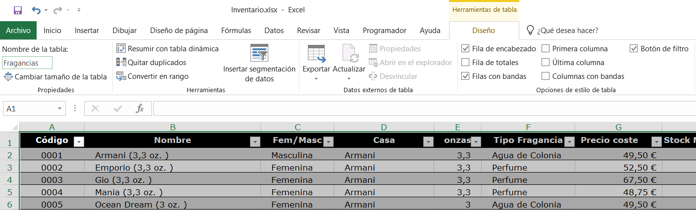
3.3 Introducción a DAX: Columnas Calculadas
Cuando los datos de origen no contienen un cálculo específico que necesitas, recurrimos al lenguaje DAX (Data Analysis Expressions).
Caso práctico (Inventario de Fragancias):
- Importa la tabla Fragancias desde tu archivo inventario.xlsx de Excel.
- Ve a la
Vista de tabla(menú izquierdo) y selecciona la tablaFragancias. - En la cinta superior, ve a la pestaña
Herramientas de tablasy haz clic enNueva columna. - En la barra de fórmulas, escribe la siguiente expresión matemática:
IVA = 0.21 * [Precio coste]
Presiona ENTER. Verás cómo se calcula automáticamente una nueva columna denominadaIVA, fila por fila. - Repite el proceso para calcular el Precio Final:
Precio = [Precio coste] + [IVA] - Ahora crea tú solo/a la fórmula de Valor Inventario, multiplicando el Precio calculado en el punto anterior por el Stock Actual
⚠️ Nota de buenas prácticas: En Power BI, crear Columnas Calculadas consume memoria física porque calcula y almacena el dato fila por fila en tu ordenador. Para cálculos acumulados o totales de tus informes (como sumas, promedios o porcentajes), la regla de oro es utilizar Medidas, las cuales no ocupan espacio ya que se calculan "al vuelo" e instantáneamente solo cuando el usuario interactúa con el reporte.
No te preocupes si ahora mismo no entiendes del todo cómo funcionan las medidas. En el Tema 5 haremos un ejercicio práctico paso a paso donde crearemos nuestras primeras medidas DAX y verás su verdadero potencial en el dashboard.
Tip de IA: Si tienes dudas escribiendo código DAX, puedes usar el asistente de Copilot integrado en la barra de fórmulas para escribir lo que necesitas en lenguaje natural (Por ejemplo: "Suma las ventas totales") y la IA generará el código por ti.
-
Ahora, cambia a la
Vista Informey trata de hacer el siguiente Dashboard. Observa que al regresar a la Vista Informe, Power BI ha incorporado los nuevos campos a la lista de campos.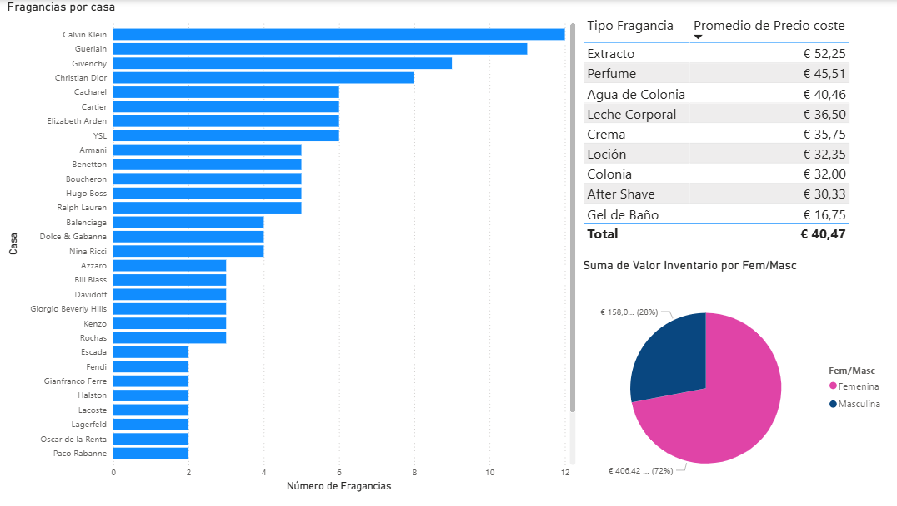
Dashboard Tema 3 - Guarda tu archivo seleccionando
Archivo > Guardarcon el nombre fragancias.pbix.
Tema 4: Modelado y Relaciones Multitabla
4.1 Relacionar tablas
Cuando importas más de una fuente de datos, debes conectarlas para que puedan interactuar en tus reportes.
-
Importa una nueva tabla que llamarás casas desde tu archivo de Excel casas.xlsx.
Para ello deberás clicar sobre el menú
Archivoy seleccionar la opciónObtener datos.Ahora tendrás dos tablas en tu panel de datos: fragancias y casas.
- Ve a la
Vista de modelo(en el menú izquierdo). - Por lo general, la función de autodetección de Power BI unirá de forma automática las tablas si detecta que comparten una columna con el mismo nombre y tipo de dato.
- Si no lo hace de forma automática, puedes crear la relación tú mismo de forma manual: haz clic sobre la columna Id de la tabla de origen y arrástrala sin soltar hasta soltarla encima de la columna correspondiente en la tabla destino.
4.2 Categorización Geográfica para Mapas
Para que los visuales de mapas de Power BI ubiquen de forma correcta las ciudades o países en el globo terráqueo, debes especificar que esos datos son geográficos.
- Ve a la
Vista de tabla. - Selecciona la columna País de tu tabla casas. En la cinta superior, entra en la pestaña
Herramientas de columnas. - Despliega la opción
Categoría de datos(que por defecto dice Sin clasificar) y seleccionaPaís o región. Verás que aparece un pequeño icono de mundo al lado del nombre de la columna Pais en el área de Datos. - Repite la operación seleccionando la columna Ciudad y cambiando su categoría de datos a
Ciudad. - Ahora, cambia a la
Vista de informey cambia el nombre de laPáginapor Dashboard - Agrega una nueva página (botón +) a la cual llamarás Mapa
Inserta el visual de
Mapa. Por motivos de seguridad y privacidad, Microsoft viene con la opción de los mapas desactivada por defecto.Cómo activar los mapas en Power BI
- Ve a la esquina superior izquierda y haz clic en
Archivo. - En el menú lateral que se despliega, selecciona
Opciones y configuracióny luego haz clic enOpciones. - Se abrirá una ventana flotante con muchas opciones. En la barra lateral izquierda, busca la sección que dice
Globaly haz clic enSeguridad. Desplázate hacia abajo en las opciones de seguridad hasta que encuentres el apartado llamado
Objetos visuales de mapa y mapa coroplético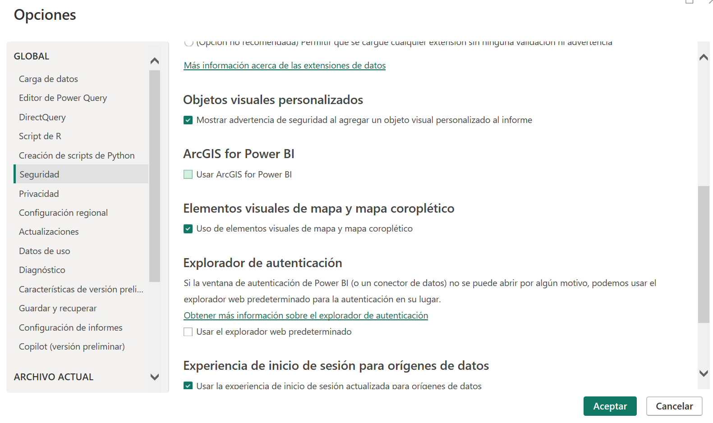
Activar Mapas - Marca la casilla que dice
Permitir objetos visuales de mapa y mapa coroplético. - Haz clic en
Aceptar.
- Ve a la esquina superior izquierda y haz clic en
- Ahora, arrastra el campo País a la zona de
Ubicación/Leyenday Fragancia aTamaño de la burbuja. Agrega un nuevo visual
Segmentación de Datosy arrastra el campo Pais a la opciónCampo. Tu Dashboard deberá lucir de la siguiente manera: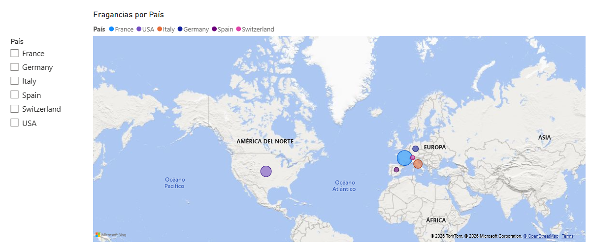
Hoja Mapa - Guarda los cambios en tu archivo fragancias.pbix (seleccionando
Archivo > Guardar).
Tema 5: Transformaciones Avanzadas, Medidas DAX y Cuadro de Mando Final
En este último ejercicio crearemos un nuevo dashboard a partir de diverses fuentes de datos.
Archivos a descargar
- ventas.zip (Carpeta a descargar y descomprimir)
- provincias.xlsx
- gerentes.txt
- logo.jpg
{kind=link}
Pasos previos
- Descarga los archivos del tema.
- Entre ellos, encontrarás un archivo comprimido (ventas.zip) con las ventas de diferentes meses.
- Descomprime el archivo. Para hacerlo, haz clic con el botón derecho del ratón sobre su nombre y selecciona
Extraer todo....
5.1 Anulación de dinamización en Power Query (Unpivot)
A menudo recibimos datos mensuales tabulados en columnas horizontales (Estilo: Enero | Febrero | Marzo), lo cual es pésimo para el análisis de datos. Debemos transformar esas columnas en filas verticales.
-
Abre PowerBI Desktop y selecciona de la lista deslizante clicando sobre el símbolo >
Seleccione un origen de datos o empiece con un informe en blanco, la opciónObtener datos de otros orígenes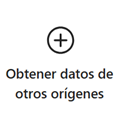
botón: Obtener datos de otros orígenes -
Selecciona
Obtener datos > Carpetapara combinar múltiples archivos mensuales de una carpeta. Clica sobre el botónConectar.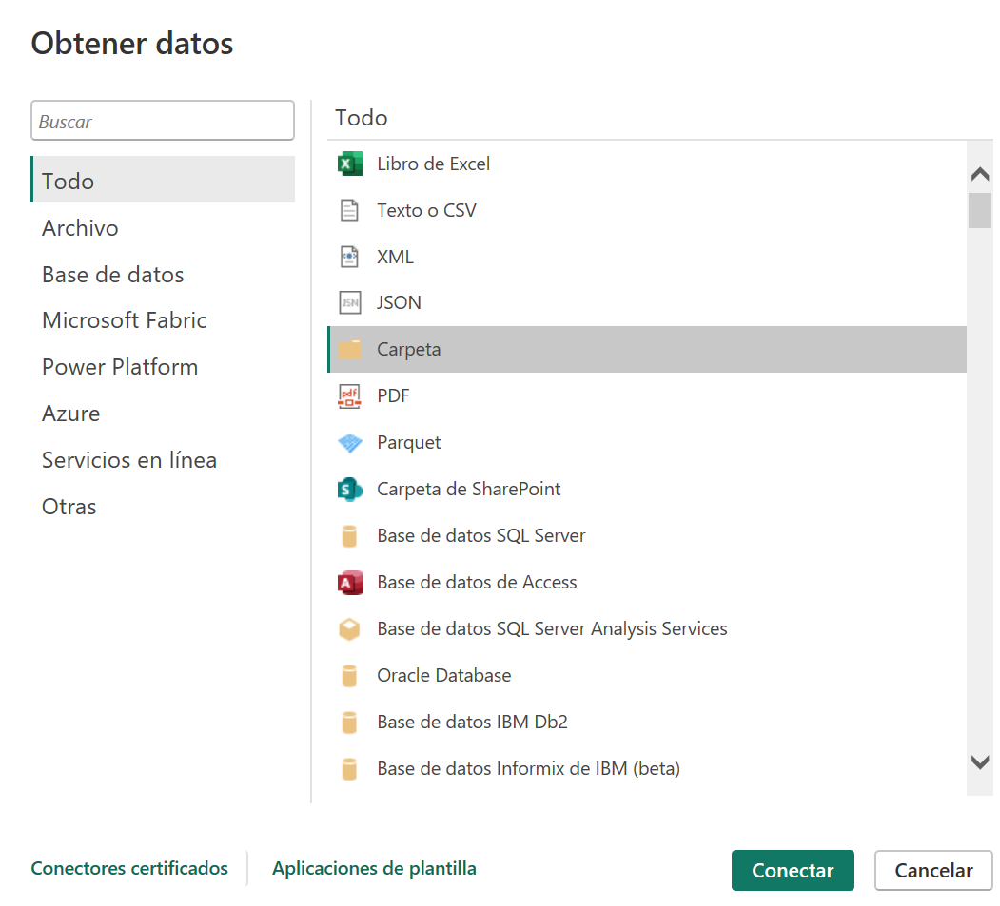
pantalla: Obtener Datos > Carpeta -
Selecciona la carpeta donde están los archivos a utilizar (en este caso ventas) y haz clic sobre el botón
Aceptar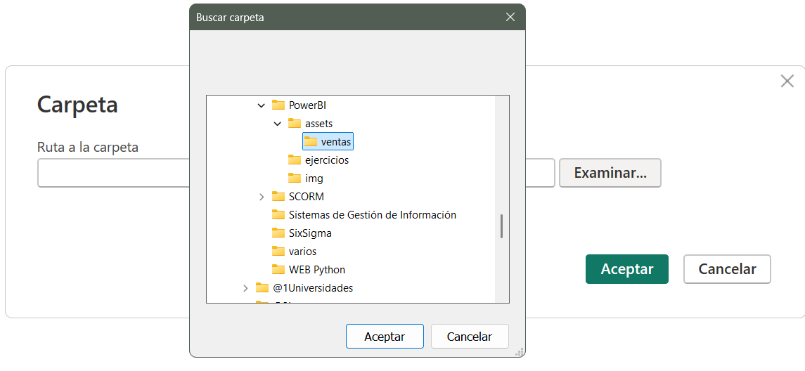
pantalla: Seleccionar carpeta Para poder utilizar ésta opción, todos los archivos de la carpeta deberán tener la misma estructura.
-
Aparecerá una pantalla como la siguiente. Ten cuidado de seleccionar la opción
Combinar y transformar datosdesde el botónCombinar.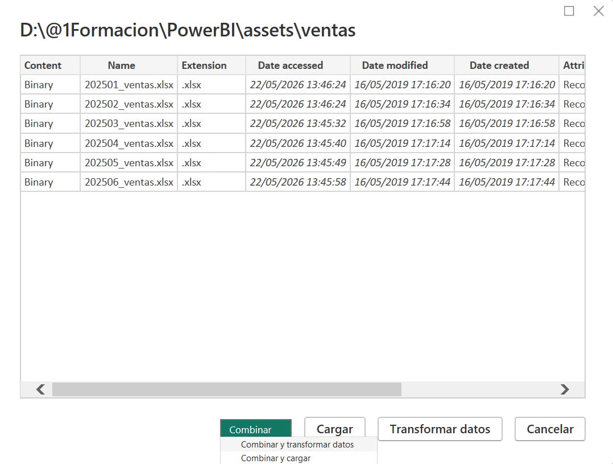
opción: Combinar y transformar datos En la pantalla
Combinar archivos, selecciona la opción ventas. Se cargarán los datos de todos los archivos de la carpeta de ventas en el Editor de Power Query. Toma en cuenta que ésto se abre en una ventana adicional a la ventana del Power BI.-
Observa cómo Power BI ha combinado los datos de todas las tablas en una sola. En la primera columna, verás de qué fichero proceden.
-
Para limpiar las fechas de los nombres de los archivos, haz clic derecho en la columna Source.Name (desde el Editor de Power Query).
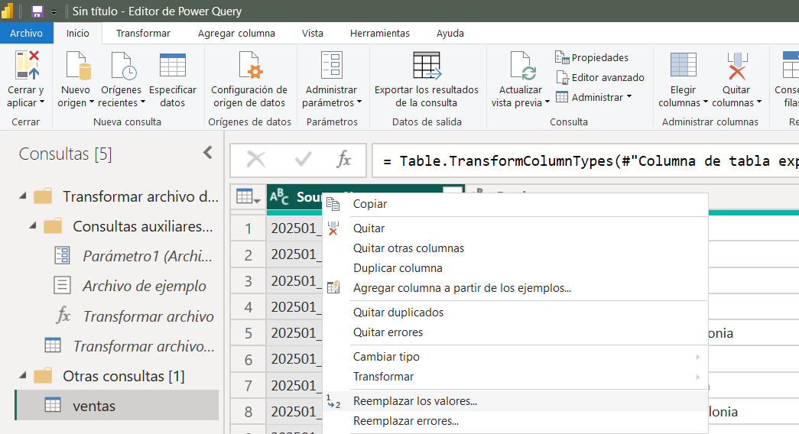
opción: Columna Source.Name -
Selecciona
Reemplazar valoresy reemplaza el texto _ventas.xlsx por un valor vacío. Haz clic sobreAceptar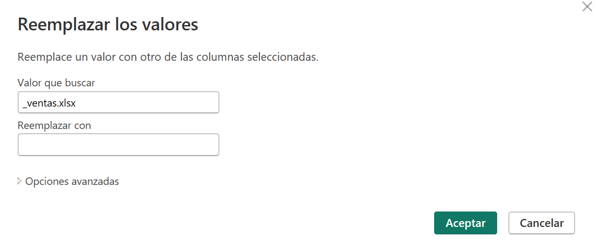
Reemplazar valores -
Dividir columna: Haz clic derecho sobre esa misma columna, selecciona
Dividir columna > Por número de caracteres. Indica 4 caracteres y selecciona la opciónUna vez, lo más a la izquierda posible.
Esto te separará de forma perfecta el año del mes. Renombra las columnas resultantes como Año y Mes respectivamente. -
Anulación de dinamización: Selecciona las tres columnas (Año, Mes y Producto), haz clic derecho sobre cualquiera de ellas y elige la opción
Anulación de dinamización de otras columnas.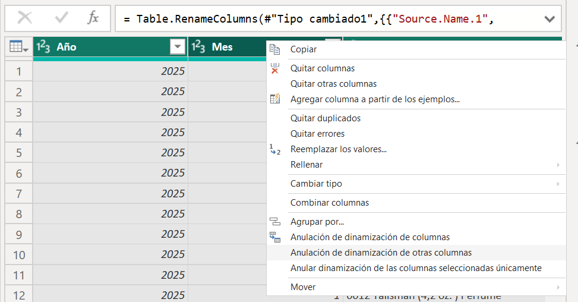
opción: Anulación de dinamización de otras columnas -
Verás que las columnas horizontales de meses se han convertido en un listado vertical compacto. Renombra la columna de propiedades
Atributocomo Provincia y la columnaValorcomo Ventas. -
En el menú de
Inicio, haz clic enCerrar y aplicar(Primer icono).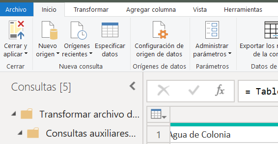
Icono Cerrar y Aplicar - Al regresar a Power BI, selecciona la
Vista de Tablapara que puedas apreciar los cambios - Guarda los cambios en tu archivo (seleccionando
Archivo > Guardar como), con el nombre de ventas.pbix .
5.2 Creación de Medidas DAX Eficientes
Para calcular el total general de ventas de nuestro nuevo modelo:
- Ve a la pestaña Herramientas de tablas en la cinta superior y haz clic en Nueva medida.
- En la barra de fórmulas escribe:
Total_Ventas = SUM(Ventas[Ventas])
Presiona ENTER. - Observarás que la medida aparece en tu panel de datos con el icono de una calculadora. Nota que a diferencia de las columnas, su resultado no se muestra en la vista de tabla; las medidas solo cobran vida cuando las colocas dentro de un gráfico en el informe.
- En la pestaña de formato, asígnale el formato de Moneda.
Las diferencias entre columnas calculadas y medidas se muestran en esta tabla resumen:
| Característica | Columna Calculada | Medida DAX |
|---|---|---|
| ¿Cuándo se calcula? | Al cargar o actualizar los datos (fila por fila). | "Al vuelo", solo cuando el usuario hace clic en un gráfico. |
| ¿Ocupa espacio? | Sí, consume memoria RAM y agranda el archivo .pbix. | No ocupa espacio en el disco duro. |
| ¿Dónde se ve? | Se ve como una nueva columna física en la Vista de Tabla. | Solo se ve el icono de calculadora; su resultado aparece al meterla en un gráfico. |
5.3. Agregar Datos al Modelo
Desde la pantalla de Power BI se pueden añadir más fuentes de datos al modelo, seleccionando la opción Obtener Datos del menú de Inicio
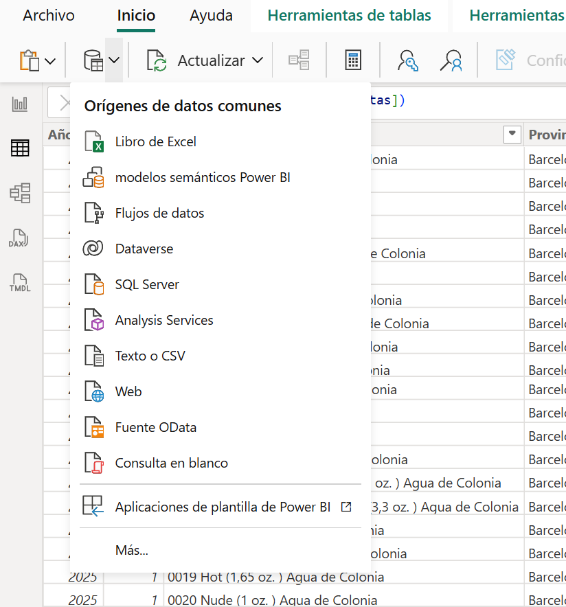
Selecciona
Texto o CSVpara importar el archivo Gerentes.txt- Cambia el nombre de las columnas columna1 y columna2 de la tabla
Gerentesa Id y Director respectivamente. Para ello deberás hacer doble clic en el nombre de la columna. Repite la operación seleccionando
Libro de Excelpara importar la tabla Provincias del fitxer Provincias.xlsx
5.4. Relacionar las tablas del modelo
Entra a la Vista de modelo. Recuerda que en esta vista podemos mirar y cambiar la forma en que se relacionan las tablas.
-
Relaciona las tablas
gerentesyProvinciasarrastrando la columna Id de la tablagerenteshacia la columna idGerente de la tablaProvincias.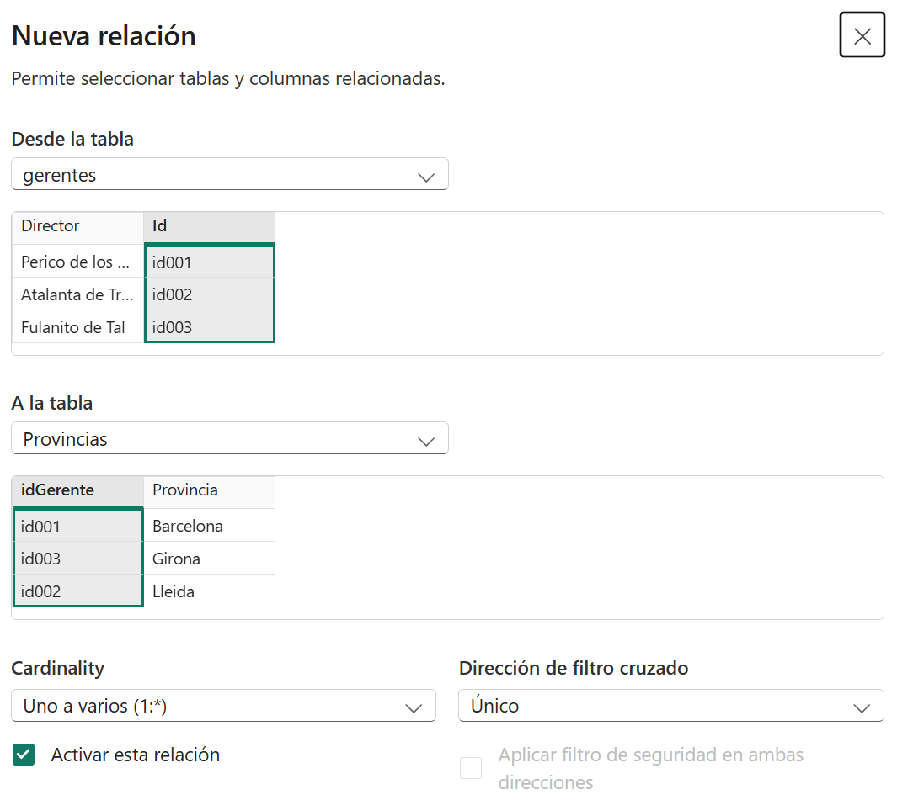
crear | editar relación entre tablas -
Relaciona las tablas
ventasyProvinciasarrastrando la columna Provincias de la tablaventashacia la columna Provincia de la tablaProvincias.Tu pantalla debería lucir similar a la siguiente:
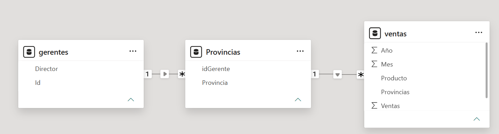
Vista de Modelo. Relaciones entre tablas. - Guarda los cambios.
5.5. Elementos del Dashboard: Tarjetas, Filtros y Elementos Visuales Adicionales
Vamos a estructurar la presentación visual del Dashboard en la Vista de informe:
-
Uso de Tarjetas (KPI): Inserta el visual de Tarjeta.
Tarjeta Arrastra la medida Total_Ventas al cuadro
valordel visual (en la sección Compilar visual).
Se mostrará el Total acumulado de las ventas. -
Segmentación de datos (Filtros interactivos): Selecciona el visual de
Segmentación de datos(icono de un embudo junto a una lista). Arrastra el campo Director al cuadrocampo. Ahora, al hacer clic en el nombre de cualquier director en la lista, todo el informe se filtrará al instante para mostrar solo sus resultados. Datos de ventas: Crea un gráfico de barras que muestre las ventas mensuales. Arrastra el Mes al
Eje X, Suma de Ventas alEje Yy Provincias aLeyendaDiseño e Identidad: Utiliza los botones del menú
Insertarpara añadir unCuadro de texto( ) con el título Informe de ventas y el botónImagen( ) para colocar el logo que descargaste al inicio de la práctica.
) para colocar el logo que descargaste al inicio de la práctica.-
Tu Dashboard deberá lucir similar al siguiente:
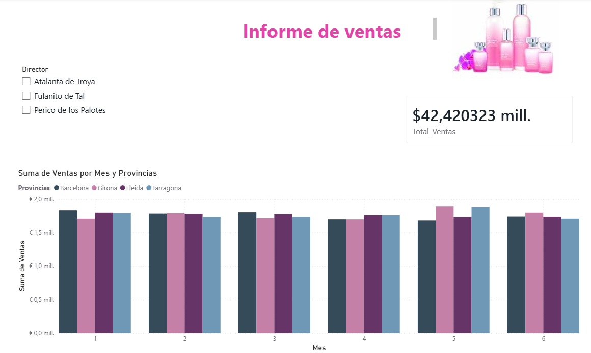
Dashboard de ventas Guarda los cambios.
5.5 Obtener más visuales (AppSource)
Si los gráficos nativos de Power BI no cubren todas tus necesidades de diseño, puedes expandir el catálogo utilizando la tienda de componentes oficial de Microsoft.
- En la zona de selección de gráficos de Power BI, busca el icono de los tres puntos (...) que indica
Obtener más visuales. - Al hacer clic se abrirá la ventana de AppSource de Microsoft directamente dentro de la aplicación.
- Puedes explorar miles de visuales avanzados creados por Microsoft y partners certificados (gráficos de velocímetros, diagramas de Gantt avanzados, mapas de calor, etc.).
- Para utilizarlos, solo debes hacer clic en el visual que te guste y presionar
Agregar. Se incorporará instantáneamente a tu barra de herramientas para ese proyecto.
(Nota: Para acceder a AppSource es indispensable que hayas iniciado sesión con tu cuenta de correo profesional o educativa de la organización).
También puedes ir directamente al Market Place de Microsoft para observar toda la oferta existente.